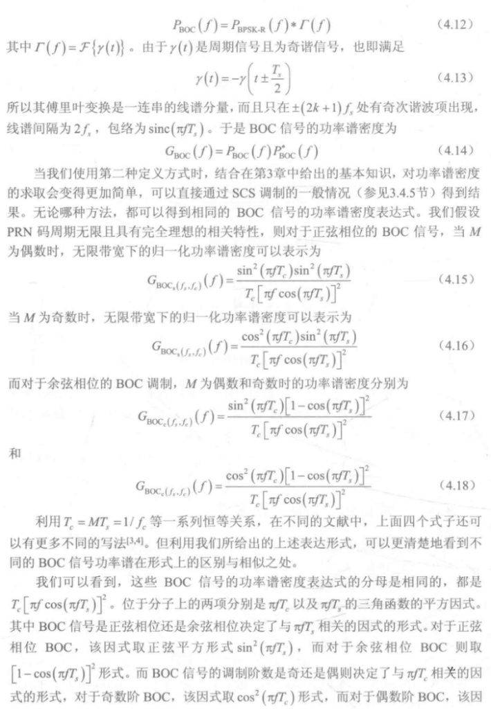

教材原页与本节目标
教材 4.3.2 的核心是把 BOC 调制看成“BPSK-R 码片波形乘以方波副载波”。时域相乘，对应频域卷积；方波副载波的奇次谐波把原本靠近中心频点的谱搬到 $\pm f_s$ 一带。
{kind=link}
{kind=link}
{kind=link}
先把符号钉稳
码片周期和码速率互为倒数：
教材里的 $T_s$ 是方波副载波的半周期，也就是方波电平保持不变的最小时间片：
所以调制阶数 $M$ 可以直接理解为一个码片里包含多少个副载波半周期：
正弦相位 BOC 的 PSD 推导
教材给出的正弦相位方波副载波为
只看一个码片内的 BOC 基本脉冲。令第 $k$ 个副载波半周期上的方波符号为 $(-1)^k$，则
为什么会出现复指数 $e$
连续时间傅里叶变换的定义本身包含复指数基函数：
其中 $e^{-j2\pi ft}$ 来自欧拉公式 $e^{-j\theta}=\cos\theta-j\sin\theta$，作用是把时域信号投影到频率 $f$ 上。由于 $p_s(t)$ 里的指示函数只在 $[kT_s,(k+1)T_s)$ 内非零，整个积分会被切成 $M$ 个小区间：
求解单个小区间的定积分
先对每一个小区间计算：
代回求和并整理成等比数列
把这个积分结果放回 $P_s(f)$：
最后一行使用的是有限项等比数列公式 $\sum_{k=0}^{M-1}q^k=(1-q^M)/(1-q)$，其中 $q=-e^{-j2\pi fT_s}$。
用提半角把复指数化成三角函数
从式 (4.11) 的方波副载波走到功率谱时，关键一步是把复指数形式改写成正弦、余弦形式。这样才能看清幅度包络和最终取模平方后的 PSD 结构。欧拉公式给出
因此遇到 $1-e^{-j2\theta}$ 或 $1+e^{-j2\theta}$ 时，可以先提取半角相位因子：
先处理不含 $M$ 的公共框架：
令 $\theta=\pi fT_s$，则
代回后，公共相位因子 $e^{-j\pi fT_s}$ 和常数 2 同时约掉：
再看带 $M$ 的分子项。当 $M$ 为偶数时，$(-1)^M=1$，所以
于是正弦相位 BOC 的单码片频谱可以写成
由于 $MT_s=T_c$，上式也就是
这里最后的 $e^{-j\pi fT_c}$ 只贡献线性相位，取模平方时消失；留下来的三角函数比值决定功率谱的形状。
当 $M$ 为奇数时，$(-1)^M=-1$，因此
所以奇数阶时，后续取模平方会把偶数阶中的 $\sin^2(\pi fT_c)$ 换成 $\cos^2(\pi fT_c)$。这正是式 (4.15) 与式 (4.16) 的差别来源。
把同一结果压缩写法表示，令 $a=\pi fT_s$，利用 $1-e^{-j2a}=2je^{-ja}\sin a$、$1+e^{-j2a}=2e^{-ja}\cos a$，得到
于是 $M$ 的奇偶性只影响最后一项取模平方后的结果。
余弦相位 BOC 只换副载波因子
余弦相位 BOC 相当于方波副载波相位移动了四分之一周期。单码片窗口会截到首尾半段副载波片段，分段积分后，影响功率谱的是下面这个替换：
四个式子的分母完全相同。$T_c$ 相关项给出细密零点网格，$T_s$ 相关项负责副载波相位带来的能量形状。
主瓣宽度、旁瓣宽度与 $M-2$
以式 (4.15) 为例，可写成
码片项的零点是
副载波项的零点是
所以旁瓣切分的基本网格来自 $T_c$，间隔为 $f_c$。但分母中的 $\cos(\pi fT_s)$ 在
处为零，这些位置正是方波副载波的奇次谱线。分子和分母同时趋零，形成有限峰值；物理上就是副载波把能量搬到 $\pm f_s$ 附近。

主瓣宽度
右侧主瓣围绕 $+f_s$。夹住它的最近两个普通零点在 $f_s-f_c$ 和 $f_s+f_c$，因此
普通旁瓣宽度
普通旁瓣夹在相邻两个普通零点之间：
内侧旁瓣数
两个主瓣内侧区域从 $-f_s+f_c$ 到 $f_s-f_c$，总宽度为
每个普通旁瓣宽度是 $f_c$，所以

把两个补充问题并回教材
为什么 $T_s=1/(2f_s)$？
因为 BOC 副载波是方波。频率为 $f_s$ 的方波完整周期是 $1/f_s$，但每半个周期就翻转一次。教材关心的是一个码片内的正负方波片段数，所以把半周期定义为 $T_s$，这样 $M=T_c/T_s$。
$\sin^2(\pi fT_s)$ 也能给零点吗？
能，但它给出的零点间隔是 $1/T_s=Mf_c$，比 $T_c$ 给出的 $f_c$ 稀疏，并且落在 $f_c$ 网格上。所以旁瓣宽度看最细网格，仍由 $T_c$ 控制。
所谓“特殊照顾”特殊在哪里？
特殊在 $f=(2r+1)f_s$ 这些副载波奇次谐波位置。那里不是普通旁瓣，而是方波副载波把 BPSK-R 谱搬移过来形成的强峰，最明显的就是 $\pm f_s$ 两个主瓣。
Gemini 补充材料全文（未删减）
下面两份内容来自本节的两个 Gemini Markdown 源文件。前面的正文已经把关键概念揉进推导线索里；这里保留完整原文，方便逐句核对，不再用润色后的摘要替代原材料。
Gemini - BOC 信号主瓣旁瓣分析（全文）
✅ BOC 信号主瓣旁瓣分析->[Flash]
📤 导出信息
- 会话标题: ✅ BOC 信号主瓣旁瓣分析->[Flash]
- 导出时间: 2026/5/21 23:52:57
- 来源: Gemini
- 链接: https://gemini.google.com/app/f4a1db18ae414f11
🙋 用户

帮我详细讲解一下“BOC主瓣 宽度为2fc，主瓣内旁瓣宽度为fc”，为什么调制阶数为M的BOC信号，主瓣内侧旁瓣的数目为M-2
🤖 Gemini
这两句话是 BOC（Binary Offset Carrier）信号频谱特征中非常经典且重要的结论。要彻底理解它们，我们需要从谱零点（Spectral Nulls）的分布以及调制阶数 M 的几何意义出发。
其实，这一切的背后都是非常纯粹且漂亮的数学关系。以下为你带来详细的推导与讲解：
基础概念与参数对齐
为了避免概念混淆，我们首先明确课本中的符号定义：
- fc：伪随机码（PRN）码速率（Chip rate），对应的码片周期为 Tc = 1/fc。
- fs：副载波频率（Subcarrier frequency）。
- M：调制阶数，定义为 $M = \frac{2f_s}{f_c}$。它代表一个正德码片（PRN chip）内部包含的副载波半周期（半个方波）的个数。
- 课本公式中的 Ts 实际上指的是副载波的半周期（即 $T_s = \frac{1}{2f_s}$），因此有恒等式：Tc = M ⋅ Ts。
一、为什么“BOC主瓣宽度为 2fc，旁瓣宽度为 fc”？
BOC 信号的功率谱密度（PSD）公式虽然看起来复杂，但无论是正弦相位（式 4.15、4.16）还是余弦相位（式 4.17、4.18），它们的分子中都包含一个共同的项：
sin2(πfTc) 这一项决定了整个功率谱的谱零点（零陷点）位置。
1. 谱零点的位置
令 sin2(πfTc) = 0，可以得到谱零点分布在：
$$\pi f T_c = k\pi \implies f = \frac{k}{T_c} = k \cdot f_c \quad (k \in \mathbb{Z})$$ 这意味着，BOC 信号的谱零点是以 fc 为间隔均匀分布的。
2. 主瓣宽度的推导
传统的 BPSK 信号能量集中在 f = 0 附近。而 BOC 信号通过副载波调制，将主能量向两侧推移，使能量最大值（主峰）对称地搬移到了 ±fs 附近（即副载波频率处）。
以正主瓣为例：
主峰位于 fs 附近。因为 $f_s = \frac{M}{2}f_c$，所以主峰位于 $\frac{M}{2}f_c$ 附近。
卡住这个主峰的左右两个最近的谱零点，分别是比 $\frac{M}{2}f_c$ 略大和略小的两个 fc 的整数倍位置：
- 左侧边界（内侧谱零点）：fleft = fs − fc
- 右侧边界（外侧谱零点）：fright = fs + fc
因此，主瓣的宽度为左右边界之差：
Widthmain = fright − fleft = (fs + fc) − (fs − fc) = 2fc
3. 旁瓣宽度的推导
除了主瓣之外，其余的普通旁瓣没有受到副载波搬移机制的“特殊照顾”，它们老老实实地夹在两个相邻的普通谱零点 k ⋅ fc 和 (k + 1) ⋅ fc 之间。 因此，任意普通旁瓣的宽度均为：
Widthside = (k + 1)fc − kfc = fc
二、为什么“调制阶数为 M 的 BOC 信号，主瓣内侧旁瓣数目为 M − 2”？
这个问题可以通过几何空间填空的方式来秒杀。
1. 数学区间推导
“两个主瓣的内侧所包含的旁瓣”指的是夹在左主瓣的右边界与右主瓣的左边界之间的全部区域。
- 右主瓣的左边界（内侧零点）位于：fright_inner = fs − fc
- 左主瓣的右边界（内侧零点）位于：fleft_inner = −fs + fc
我们要计算这两者之间所夹的总频带宽度：
Δf = (fs − fc) − (−fs + fc) = 2fs − 2fc 将 2fs = M ⋅ fc 代入上式：
Δf = M ⋅ fc − 2fc = (M − 2)fc
2. 计算旁瓣个数
既然整个内侧空间的频带总宽度是 (M − 2)fc，而我们前面已经证明了，每一个普通旁瓣的宽度恰好是 fc。
那么，这个空间里能塞下多少个旁瓣呢？
$$\text{旁瓣数目} = \frac{\text{内侧总宽度}}{\text{单个旁瓣宽度}} = \frac{(M - 2)f_c}{f_c} = M - 2$$
三、结合课本插图 4-8 实例验证
我们可以用图中给出的两个典型信号来完美验证这个规律：
实例 1：BOCs(1, 1) 信号
- 参数：fs = 1.023 MHz，fc = 1.023 MHz。
- 调制阶数：M = 2 × 1/1 = 2。
- 理论内侧旁瓣数：M − 2 = 2 − 2 = 0 个。
- 图像验证：看图 4-8 中的黑色实线（BOCs(1, 1)），两个高高耸起的主峰（位于 ±0.1 × 107 Hz 附近）之间直接凹陷下去，中间没有任何小山峰（旁瓣）。理论与图像完美相符。
实例 2：BOCc(6, 1) 信号
- 参数：fs = 6 × 1.023 MHz，fc = 1.023 MHz。
- 调制阶数：M = 2 × 6/1 = 12。
- 理论内侧旁瓣数：M − 2 = 12 − 2 = 10 个。
- 图像验证：看图 4-8 中的灰色细线（BOCc(6, 1)），两个最高的主峰位于
±0.6 × 107 Hz 附近。
- 因为余弦相位在中心频点 f = 0 处是个零陷点（过零点），所以图形以 f = 0 对称。
- 我们在 f > 0 的一侧（即 0 到 0.6 之间）仔细数一数灰色的小山头，会发现刚好有 5 个旁瓣。
- 同理，左侧（−0.6 到 0 之间）也有 5 个旁瓣。
- 两侧相加：5 + 5 = 10 个内侧旁瓣！再次与理论完美契合。
🙋 用户
第一个问题，为什么是^2(f T_c)决定零点位置，^2(f T_s)没有能力决定零点位置吗？第二个问题“其余的普通旁瓣没有受到副载波搬移机制的“特殊照顾”，它们老老实实地夹在两个相邻的普通谱零点”为什么没有收到特殊照顾？特殊在哪里？
🤖 Gemini
这两个问题问得非常深刻，直接触及了 BOC 信号频谱结构的数学本质和物理意义。
我们把公式拆开来看，你就能一眼看清这其中的“幕后推手”。
问题一：为什么是 sin2(πfTc) 决定零点，sin2(πfTs) 不行吗？
我们以课本中的式（4.15）——正弦相位、 M 为偶数时的 BOC 信号功率谱为例。为了看得更清楚，我们把这个公式重新因式分解、整理一下：
$$G_{\text{BOC}_s}(f) = \frac{\sin^2(\pi f T_c) \cdot \sin^2(\pi f T_s)}{T_c \cdot [ \pi f \cos(\pi f T_s) ]^2} = \underbrace{\left[ \frac{\sin^2(\pi f T_c)}{T_c (\pi f)^2} \right]}_{\text{项 A：码片项}} \cdot \underbrace{\tan^2(\pi f T_s)}_{\text{项 B：副载波项}}$$ 通过这个改写，你可以发现，频谱是由项 A（与码片周期 Tc 相关）和项 B（与副载波半周期 Ts 相关）共同相乘决定的。
那么，为什么我们说是 Tc 决定了密集的谱零点分布呢？原因有两点：
1. 密度的绝对碾压（时频对偶原理）
在时域上，码片周期 Tc 是远大于副载波半周期 Ts 的（因为 Tc = M ⋅ Ts，且调制阶数 M ≥ 2）。 根据傅里叶变换的对偶性：时域越宽，频域越窄（变化越剧烈）。
- 项 A（含 Tc）：由于 Tc 大，他在频域震荡得非常快、非常密。每隔 fc 就会产生一个零点。它就像一把细密的筛子。
- 项 B（含 Ts）：由于 Ts 小，他在频域震荡得非常慢。要每隔 2fs（即 M ⋅ fc）才产生一个零点。它是一把粗疏的耙子。
2. Ts 的零点完全被 Tc “包容”了
我们来看看项 B（tan2(πfTs)）什么时候为 0？ 当 πfTs = kπ 时，即 $f = \frac{k}{T_s} = 2k \cdot f_s$。 因为 2fs = M ⋅ fc，所以这些零点位置实际上就是 f = k ⋅ M ⋅ fc。
发现了吗？项 B 想让频谱为 0 的地方，项 A（每隔 fc 就为 0）早就已经是 0 了！ Ts 并没有能力创造出任何新的、更细密的零点，它定出的几个稀疏零点，只是刚好和 Tc 编织好的细密谱零点网中的某几根网格线重合了而已。
补充思考：如果 M 是奇数（式 4.16），项 A 会变成 cos2(πfTc)，此时零点位置整体平移了 0.5fc，但相邻零点之间的间隔依然是固定的 fc。所以，决定“旁瓣宽度为 fc”这个网格尺度的，永远是 Tc。
问题二：“特殊照顾”到底特殊在哪里？为什么其余旁瓣没有？
你看到的“其余普通旁瓣老老实实夹在中间”，是因为它们确实没分到能量。而那两个高高耸立的主瓣，才受到了物理机制的“特殊照顾”。
这个“特殊照顾”，在物理上叫做频谱搬移，在数学上叫做极点放大。
1. 什么是“特殊照顾”？（物理视角）
BOC 信号在时域上，是用伪码（BPSK）去乘以一个方波副载波。
- 传统的 BPSK 信号，能量全集中在中心频点 f = 0 附近（像一座大山）。
- 方波副载波的傅里叶变换，在频域 ±fs 处有两个最强的谱线（基波成分）。
- 两者在时域相乘，等于在频域把 BPSK 那座中心大山拦腰切断，分别向左、向右各搬移了 fs 的距离。
这就是特殊照顾！副载波用自己的频率 fs，强行把原本属于中心处的巨大能量，注入到了 ±fs 这两个特定位置。
2. 数学上如何体现这种“特殊照顾”？
我们再回头看刚刚改写出的公式：
$$G_{\text{BOC}_s}(f) = \left[ \frac{\sin^2(\pi f T_c)}{T_c (\pi f)^2} \right] \cdot \tan^2(\pi f T_s)$$ 如果没有右边的 tan2(πfTs)，左边的项随着频率 f 的增大，由于分母有 f2，谱线高度会衰减得非常快（这就是普通 BPSK 的衰减速度）。
但是，当频率 f 逐渐靠近副载波频率 fs 时：
$$\pi f T_s \to \pi f_s T_s = \pi f_s \left(\frac{1}{2f_s}\right) = \frac{\pi}{2}$$ 此时，$\tan^2(\pi f T_s) \to \tan^2(\frac{\pi}{2}) \to \infty$！
这个 tan2 项在 f = ±fs 附近变成了一个恐怖的“能量放大器”（数学上的极点）。它疯狂地对抗分母上 f2 的衰减，甚至强行把本该在这里归零的谱线硬生生地拉了起来，反向冲高，从而形成了两个高耸的、宽度为 2fc 的主瓣。
3. 为什么其余普通旁瓣没有受到照顾？
因为这个“能量放大器” tan2(πfTs) 是有选择性的。它只在 f = ±fs（以及 3fs, 5fs 等高次谐波，但高次谐波处分母的 f2 已经太大了，很难拉起来）附近才会暴涨。
而在远离 ±fs 的中继区域（比如在 −fs 和 +fs 之间的区域），tan2(πfTs) 的值非常小，甚至在某些地方自己也变成了 0。
在这些区域：
- 没有副载波搬移过来的核心能量。
- tan2 放大器熄火，无法对抗 $\frac{1}{f^2}$ 的自然衰减。
所以，这些区域的信号只能听天由命，任由 Tc 编织出的细密零点网（间隔为 fc）对其进行切割。切出来的小碎块，就是那些“老老实实”呆在底部的普通旁瓣。
🙋 用户
为什么Ts=1/2fs
🤖 Gemini
这其实是卫星导航（GNSS）领域在推导 BOC 调制时，约定俗成的一个符号定义习惯。
在常规的信号处理中，频率为 fs 的信号，其完整周期确实是 $T = \frac{1}{f_s}$。但在你贴出的课本教材中，将 Ts 定义为了副载波的半周期（Half-period），即：
$$T_s = \frac{1}{2f_s}$$ 为什么要故意用“半周期”来当做基准时间单位呢？这背后有两个非常直观的原因：
1. 物理意义：方波副载波的“电平持续时间”
BOC 信号使用的副载波 γ(t) 不是正弦波，而是方波（即式 4.11 的 sgn[sin (2πfst)]）。
对于一个频率为 fs 的方波：
- 在前半个周期，它的电平是 +1；
- 在后半个周期，它的电平是 −1。
也就是说，这个方波每隔 $\frac{1}{2f_s}$ 秒就会发生一次正负翻转。在物理上，每一次翻转中间维持常数（+1 或 −1）的这段时间，就是方波最基本的“脉冲片”。为了研究方便，作者直接把这个最基本的电平持续时间定义为了 Ts。
2. 为了让调制阶数 M 的公式极其整齐
BOC 信号有一个核心参数叫调制阶数 M，它的物理定义是：一个伪码码片（PRN Chip）内部，究竟包含了多少个副载波的“半周期”（即多少个方波脉冲）。
我们来做个简单的数学连连看：
一个伪码码片的持续时间是 $T_c = \frac{1}{f_c}$。
如果我们定义副载波半周期为 $T_s = \frac{1}{2f_s}$。
那么一个码片时间 Tc 内部包含的半周期个数 M 自然就是：
$$M = \frac{T_c}{T_s} = \frac{\frac{1}{f_c}}{\frac{1}{2f_s}} = \frac{2f_s}{f_c}$$
发现了嘛？正是因为定义了 $T_s = \frac{1}{2f_s}$，才有了课本里那个完美的恒等式：
Tc = M ⋅ Ts 这个公式的几何含义瞬间变得无比清晰：1 个大码片（Tc） = M 个小副载波半周期（Ts）。
大白话总结： 如果不把 Ts 定义为半周期，那公式就会变成 $T_c = \frac{M}{2} T_{\text{full}}$，每次推导都要带着个分母
2晃来晃去。为了公式的美观和推导的顺畅，先辈们索性把 Ts 直接强行定义成了那“半个周期”。
Gemini - 傅里叶变换时频宽度对偶性（全文）
✅ 傅里叶变换时频宽度对偶性->[Flash]
📤 导出信息
- 会话标题: ✅ 傅里叶变换时频宽度对偶性->[Flash]
- 导出时间: 2026/5/21 23:49:56
- 来源: Gemini
- 链接: https://gemini.google.com/app/d8fbf5804d1ccafc
🙋 用户
傅里叶变换的对偶性：时域越宽，频域越窄（变化越剧烈）。怎么解释？
🤖 Gemini
你敏锐地抓住了傅里叶变换中最核心、最美妙的对称性质之一！不过在信号处理的严格定义里，你提到的“时域越宽，频域越窄”，通常被称为尺度变换特性（Scaling Property）或时频不确定性原理。而“对偶性（Duality）”一般指时域和频域公式结构的对称性（例如时域的冲激对应频域的常数，反过来频域的冲激也对应时域的常数）。
不过它们背后的物理本质是完全相通的。要直观理解为什么“时域越宽，频域越窄（变化越剧烈）”，我们可以从物理直觉、数学公式和时频不确定性三个层面来拆解：
1. 物理直觉：频率是“变化的快慢”
这是最容易建立直观感知的视角：
- 时域越宽 → 变化越平缓 → 高频成分越少 → 频域越窄 如果一个信号在时域上拉得很宽（比如一个持续很久、缓缓起伏的波包），这意味着它随时间改变得非常缓慢。既然变化缓慢，它里面就不需要包含什么“急剧”的细节，因此高频分量几乎为零，能量全部集中在零频（直流）附近的低频区域，谱线自然就缩得很窄。
- 时域越窄 → 变化越剧烈 → 高频成分越多 → 频域越宽 反过来，如果一个信号在时域上极窄（比如一瞬间拉起的方波脉冲，或者理想的 δ(t) 冲激信号），它在极短的时间内经历了从 0 到峰值再到 0 的巨大突变。为了在数学上“拼凑”出这种无限剧烈的边缘，你必须借用大量频率极高的正弦波去重叠。因此，时域越窄，需要的频率范围就越宽。
极端的两面：
- 完美的单频正弦波：在时域上无限宽（从 −∞ 到 +∞），它永远平滑，因此它在频域窄到了极致——只有一个孤零零的谱线。
- 理想冲激信号 δ(t)：在时域上窄到了极致（只在 t = 0 有值），它的瞬间变化率无限大，因此它在频域宽到了极致——在所有频率上都有值（均匀白谱）。
2. 数学支撑：尺度变换特性（Scaling Property）
傅里叶变换的数学公式直接推导出了这个结果。假设时域信号 x(t) 的傅里叶变换是 X(f)：
x(t) ↔︎ X(f) 如果我们把时域信号在时间轴上“拉宽” a 倍（其中 a > 1，新信号为 x(t/a)），根据尺度变换性质，它的频谱会变成：
$$x\left(\frac{t}{a}\right) \longleftrightarrow a \cdot X(a f)$$ 注意看频域自变量变成了 af：
- 原来在 f = 1 Hz 处的频谱值，现在被压缩到了 f = 1/a Hz 处。
- 这意味着整个频谱图在频率轴上被等比例压缩（变窄）了。
- 而前面的系数 a 变大，说明频谱的高度变高了，这是为了保证信号的总能量在时频转换前后保持守恒（帕塞瓦尔定理）。
3. 本质：时频不确定性原理
这不仅仅是信号处理的巧合，它是一条基础的数学物理定律。信号无法同时在时域和频域上都无限集中。如果我们定义时域的“宽度”为 Δt，频域的“宽度”为 Δf，它们之间永远满足一个不等式：
Δt ⋅ Δf ≥ C (常数)
在所有信号中，高斯波包（Gaussian
Packet）是唯一能达到这个下限完美平衡的信号。
高斯波包的时频不确定性：时域宽度与频域宽度互为倒数. 来源： Cantor’s
Paradise
如上图所示，当你在左图的时域（Δx）把高斯曲线拉得越宽，右图对应的频域谱线（Δk）就必然会缩得越窄。
这也正是量子力学中海森堡不确定性原理（位置与动量不能同时精确测量）在信号分析里的纯数学版本。因为粒子的波函数在位置空间和动量空间表征上，本质上就是一对傅里叶变换。